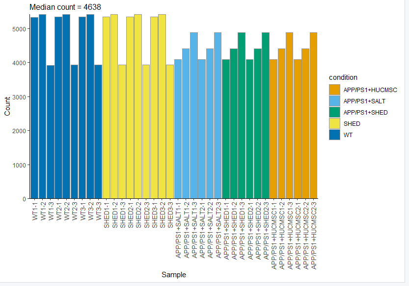
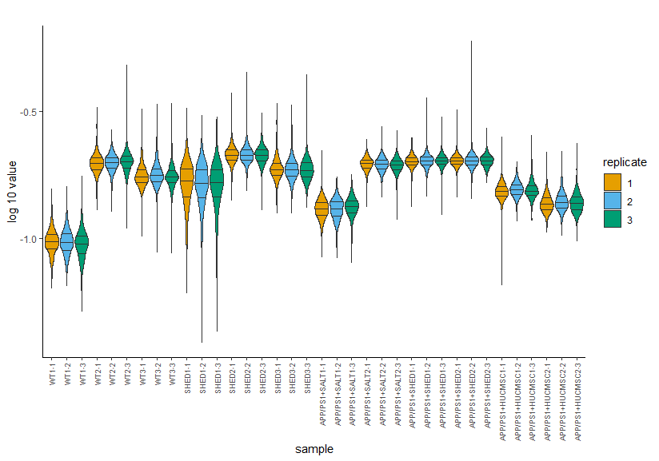
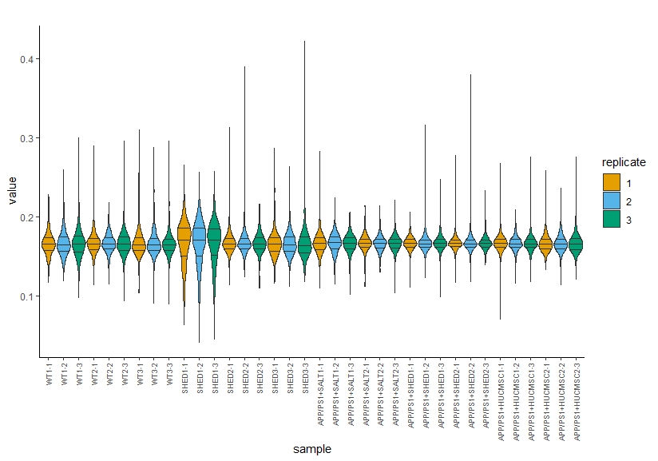
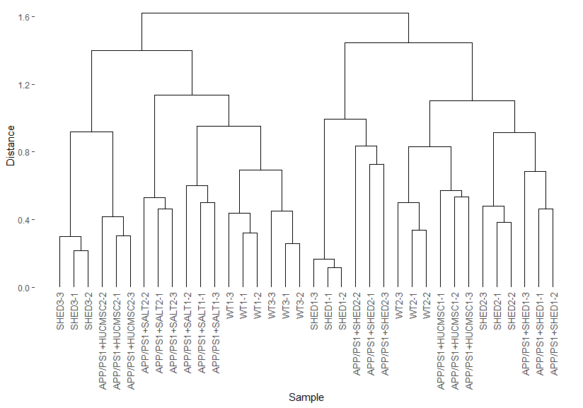

TMT蛋白组学：下游分析
在前面的分析，我们已经得到了蛋白组学的搜库结果，那么我们怎么才能将其分析出具有生物学意义的东西呢？
在结果的路径下，有一个Combined文件夹，里面的txt文件夹存放了我们的搜库结果，其中的evidence.txt跟proteinGroup.txt为最重要的两个，在这里，我们使用R包proteusTMT进行下游分析。
1. 安装依赖
Proteus can be installed directly from GitHub. First, you need to install BioConductor and limma:
install.packages("BiocManager")
BiocManager::install()
BiocManager::install("limma")
You also need devtools:
install.packages("devtools")
In order to run examples or vignette code, additional packages with example data need to be installed:
devtools::install_github("bartongroup/proteusLabelFree")
devtools::install_github("bartongroup/proteusTMT")
devtools::install_github("bartongroup/proteusSILAC")
Finally, you can install proteus:
devtools::install_github("bartongroup/Proteus", build_opts= c("--no-resave-data", "--no-manual"), build_vignettes=TRUE)
Note: use build_vignettes = FALSE if you run into problems with vignettes installation.
2. meta文件准备
对于Proteus，其中最为重要的是我们需要对TMT6plex的每一个标记进行标注清楚，在这里，我们准备一个模板作为参考
- experiment：这个是你在上游分析搜库的时候，对每一个raw设置的experiment情况，比如Ctrl1.raw文件里面，包含了6个TMT标记，其中每一个标记代表不同的样本，比如Ctrl1包括了WT1-1，WT2-1，WT3-1，SHED1-1，SHED2-1，SHED3-1，WT1-1指的是野生型的第一个重复
- measure：TMT6plex将返回6个Reporter intensity，每一个对应上述的一个sample
- sample：表示TMT6plex里都有哪六个样本
- condition：样本分组情况
- replicate：重复次数

3. Proteus分析
3.1 加载依赖
library(proteusTMT)
library(proteus)
3.2 导入数据
3.2.1 列名设置
The default measure.cols object is designed for label-free data. For TMT data we need to specify all reporter intensity columns. In out example we have 10 reporter columns, numbered from 1 to 6:
measCols <- paste0("Reporter intensity ", 1:6)
names(measCols) <- paste0("reporter_", 1:6)
意味着我们将Reporter intensity 1重命名为reporter_1
3.2.2 导入evidence和meta
evi <- readEvidenceFile('txt/evidence.txt', measure.cols=measCols)
meta <- read.delim('meta.txt', header=TRUE, sep="\t")
3.2.3 创建peptide数据集
pepdat <- makePeptideTable(evi, meta, measure.cols=measCols, aggregate.fun=aggregateMedian, experiment.type="TMT")
plotCount(pepdat)

3.3 蛋白结果数据
3.3.1 创建蛋白结果数据
We create protein data using the high-flyer method.
prodat <- makeProteinTable(pepdat, aggregate.fun=aggregateHifly, hifly=3)
3.3.2 Normalization
For TMT data we recommend using CONSTANd normalization Maes et al. 2016.
prodat.norm <- normalizeTMT(prodat)
write.csv(prodat.norm[["tab"]],file='prodat.csv')
These two figures show reporter intensity distributions before and after normalization.
plotSampleDistributions(prodat, fill="replicate")

plotSampleDistributions(prodat.norm, log.scale=FALSE, fill="replicate")

3.3.3 Clustering
We can use the same function plotClustering() to see the dendrogram for the proteins.
plotClustering(prodat.norm)

3.4 差异表达分析
我们想比较SHED组跟WT组的差异情况，于是
res <- limmaDE(prodat.norm, conditions=c("WT", "SHED"))
write.csv(res,file='WT_SHED_result.csv')
得到的csv文件与前面的prodat.csv文件，即可参考RNA-seq的下游分析进行，这里不做过多的阐述
RNA-seq下游分析教程：https://starlitnightly.github.io/bioinformatic_tutorial/RNASEQ/rnaseq_2.html